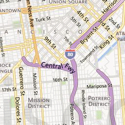

How web maps work! (Mostly. For the most part.)
Hi! I'm
Lyzi. I work at
Mapbox.
Mapbox: tools for doing lots of things with maps (focused on web and mobile)
Directions! Geocoding! Satellite!
Mobile! Web! Design!
Real talk: we are currently at a transition point in web mapping.
Moving from raster-based maps to vector-based maps.
Today we are going to walk through using vector-based maps, which is how modern Mapbox tools work.
But raster-based maps are important too, so we will touch on them as well.
Before we start: maps are hard and some of this will be confusing. That's okay! You are a champion!
Step one: upload a tileset.
When you upload vector data to Mapbox, it is converted to a vector tileset.
In order to make your maps efficient, Mapbox takes your data and creates a tileset from it: a grid of data, broken up into squares at preset zoom levels.
For some history...
Map tiles were 256x256 pixel PNG images that only load at the scale and extent of the map container.
This makes the map faster and more agile -- instead of loading the whole world or giant images, the page loads tiny images only in the places you're looking.
How many tiles are in each zoom level? The equation is: 2^zoom x 2^zoom = number of tiles.
2^0 x 2^0 = 1 x 1 = 1 tile
2^1 x 2^1 = 2 x 2 = 4 tiles
2^2 x 2^2 = 4 x 4 = 16 tiles
2^17 x 2^17 = 131,072 x 131,072 = 17,179,869,184 tiles!
Tiling introduced standardization to interactive maps, which facilitated a thriving ecosystem of mapping tools.
The standard includes:
- A preset list of map scales ("zoom levels")
- For each zoom level, a preset number of tiles it takes to cover the whole world
- For each tile at each zoom, a specific location the tile covers

Web mapping libraries like
Leaflet and
Mapbox.js can display the
correct tiles at the
correct zoom levels depending on where the user is looking in the world.
This created an amazing, collaborative, open source mapping world that facilitated lots of interesting growth...
... including a little company called Mapbox.
Vector tiles take this idea and apply it to data. This tiled data can then be styled and rendered.
So let's style it! To Mapbox Studio!
What is a style?
A style is a JSON object that contains a bunch of rules for how to draw data on a map.
So how does this apply to the map tiles we talked about earlier?
Instead of creating small image tiles that are pre-rendered before hitting the browser, we are creating vector tiles and a stylesheet.
The stylesheet is passed to the browser to render with the help of the computer's graphics processing unit. This is called WebGL.
(This is different than the older process, which involved adding image tiles to a map and then a vector overlay for interactive data.)
What's in a stylesheet?
Mapbox GL JS is the web mapping library that makes styles
come to life -- it allows us to
interact with this stylesheet.
There are some
amazing tools online for playing around with code. My favorite is
JSBin.
So how does this relate to older web mapping libraries like Leaflet and Mapbox.js?
Those libraries use different mechanisms for adding data to maps. You can create raster tiles from your Mapbox Studio maps but they will not be interactive.
Why this shift?
There were significant limitations to the old pattern.
Image tiles were served to the browser in a grid, loaded when necessary at specific zoom levels.
To add interactive data, you needed to add an overlay using your web mapping library and GeoJSON data, and there are limitations...
Unless you enjoy crashing browsers, of course!
Another bummer is the jumpyness when going bewteen zoom levels. And tile loading is fast, but not that fast.
=
Mapbox GL makes map loading hella crazy stupid fast. It also means you can do cool stuff like rotating and tilting the map, smooth/infinite zooming, and more!
So, again: what does Mapbox Studio do? It is a visual interface for creating GL stylesheets.
Almost everything you do in Mapbox Studio relates directly to something in the Mapbox GL Style Specification -- especially creating and editing layers.
This stuff is difficult, but powerful. There are a lot of pieces.
I believe in you! You are going to make amazing things.
Questions?